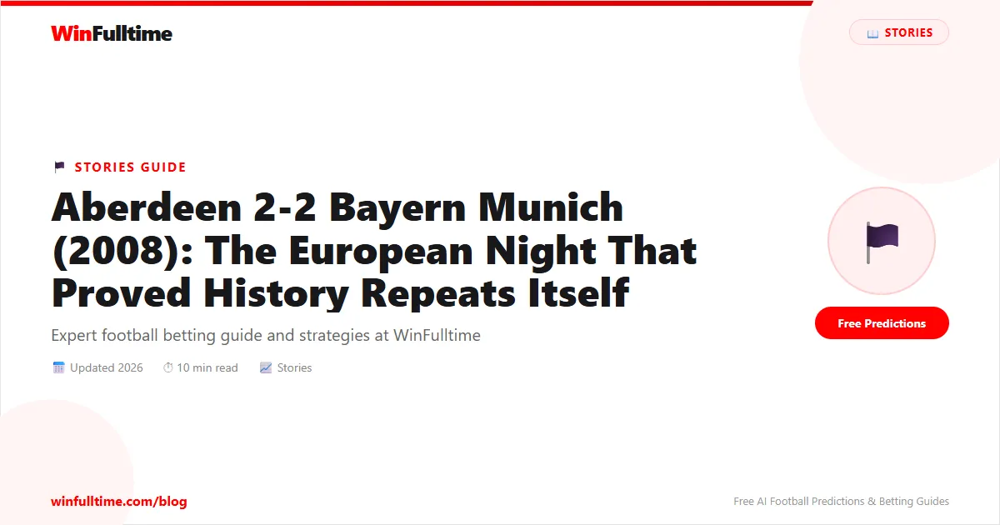

On Valentine's Day 2008, Pittodrie Stadium did not look like a place where a romantic dinner was anyone's priority. It looked like a fortress. Twenty thousand and forty-seven supporters packed into the granite city's famous old ground, and they came carrying 25 years of history on their shoulders. Exactly a quarter of a century earlier, in 1983, Aberdeen had beaten Bayern Munich 3-2 in the quarter-final of the European Cup Winners' Cup — a result that propelled them toward a run that ended with Alex Ferguson lifting a European trophy against Real Madrid. Now, in February 2008, the draw for the UEFA Cup Round of 32 had handed them the same opponents: Bayern Munich, the German champions, the tournament favourites. It felt like fate. What followed was one of the great modern European nights in Scottish football history.
Aberdeen entered the tie as rank outsiders. Bayern Munich's squad read like a roll call of European royalty: Philipp Lahm, Lúcio, Martín Demichelis, Bastian Schweinsteiger, Miroslav Klose, Luca Toni, Lukas Podolski. Their manager was Ottmar Hitzfeld, a man with two Champions League titles on his CV. Aberdeen, by contrast, were managed by Jimmy Calderwood and arrived at the tie with an injury list that bordered on the absurd. Richie Byrne, Jackie McNamara, Richard Foster, Jamie Smith, and Derek Young were all ruled out. The squad was stretched to breaking point before a ball had even been kicked.
But Aberdeen had something Bayern could not buy: a recent memory of doing exactly this. The 1983 victory was woven into the club's identity. Willie Miller, Alex McLeish, Doug Rougvie, and John McMaster — heroes of that 1983 side — were in the stands, preparing to take a bow at half-time. The crowd knew the history because they had lived it.
The first half was a masterclass in defiance. Aberdeen took the lead in the 24th minute when Darren Mackie slipped a pass through to Scott Walker, who smashed a low shot past Oliver Kahn's successor, Michael Rensing. Pittodrie erupted. The noise was deafening. Scottish football, written off by a continent, was leading Bayern Munich.
Bayern responded with the clinical patience of a side that knew they would get chances. In the 29th minute, Miroslav Klose — the man who would go on to become the all-time World Cup top scorer — rose to meet a cross and nodded Bayern level. For the next twelve minutes, Aberdeen absorbed pressure, cleared lines, and refused to break. Then, on the stroke of half-time, something magical happened. A young Nigerian winger named Sone Aluko — 21 years old, direct from the Aberdeen academy — picked up the ball on the left, cut inside past two Bayern defenders, and curled a stunning right-footed shot into the far corner. Pittodrie lost its mind. Aberdeen 2-1 Bayern Munich. Half-time.
At the interval, the four surviving members of the 1983 team — Willie Miller, Alex McLeish, Doug Rougvie, and John McMaster — stepped onto the pitch to a standing ovation that lasted nearly two full minutes. The symmetry was impossible to ignore. 25 years to the day, more or less, and Aberdeen were beating Bayern Munich again.
Bayern came out for the second half with renewed intensity. Hitzfeld's tactical adjustments took effect, and the German side dominated possession. But Aberdeen held firm, repelling wave after wave of attack. It took a moment of high controversy to break them.
In the 55th minute, a cross came into the Aberdeen box. Alan Maybury — a Scottish defender on loan from Leicester City — jumped to block it. The ball struck his arm. Spanish referee Eduardo Iturralde González immediately pointed to the spot. The Pittodrie crowd howled in protest. Replays later showed that Maybury was less than a yard away when the ball was struck, and his arm was in a natural position. It was the kind of decision that modern VAR would almost certainly overturn. But in 2008, there was no VAR. The penalty stood.
What happened next only deepened the sense of injustice. Hamit Altintop stepped up to take the penalty. Jamie Langfield, Aberdeen's goalkeeper, saved it — a brilliant stop low to his left. But the ball rebounded straight back to Altintop, who smashed the rebound into the roof of the net. Under the laws at the time, the penalty taker could not touch the rebound unless the goalkeeper touched it. Langfield had indeed touched it — he saved the shot — so the goal was legal. But it felt cruel. It felt like a second chance the German side did not deserve. The score was 2-2.
Referee Eduardo Iturralde González's decision to award a penalty for handball against Alan Maybury was hotly debated for years after the match. Aberdeen fans maintain it was harsh; Bayern fans argue Maybury's arm was raised. Either way, it denied Scottish football one of its greatest modern victories.
With the score at 2-2, Bayern pushed for a winner that would have given them a massive advantage heading into the second leg at the Allianz Arena. Aberdeen's players, exhausted and depleted by injuries, threw themselves at everything. Zander Diamond and Andrew Considine formed a human wall at centre-back. Scott Severin, the captain, covered every blade of grass in midfield. Langfield made save after save. The crowd, sensing history slipping away, roared even louder.
Bayern had chances. Luca Toni headed wide from six yards. Schweinsteiger rattled the crossbar. Klose forced a point-blank save from Langfield in the dying minutes. But Aberdeen held on. The final whistle blew: 2-2. Pittodrie celebrated like a victory, because in every meaningful sense, it was.
| Date | February 14, 2008 |
| Competition | UEFA Cup Round of 32, First Leg |
| Venue | Pittodrie Stadium, Aberdeen |
| Attendance | 20,047 |
| Referee | Eduardo Iturralde González (Spain) |
| Score | Aberdeen 2-2 Bayern Munich |
| Scorers | Walker 24', Aluko 41' — Klose 29', Altintop 55' (pen rebound) |
Manager: Jimmy Calderwood
Manager: Ottmar Hitzfeld
Aberdeen travelled to the Allianz Arena on February 21 needing a result to reach the Round of 16. The dream lasted roughly 35 minutes of the second leg. Bayern, playing with the cold fury of a wounded giant, dismantled Aberdeen 5-1 in Munich. Klose scored twice. Podolski scored. Toni scored. The aggregate finished 7-3. It was a harsh reminder of the gulf in class between the Scottish Premier League and the Bundesliga. But it did not erase what had happened at Pittodrie. It did not take away the 2-2 draw, the roar of the crowd, or the image of Sone Aluko cutting inside and beating a Bundesliga giant with a curling shot that seemed to bend the very fabric of the night.
The reason this match matters more than a standard cup-tie draw is the historical echo. On March 2, 1983, Aberdeen hosted Bayern Munich in the European Cup Winners' Cup quarter-final first leg. They won 3-2. Gordon Strachan, a midfield genius at his peak, scored twice. John Hewitt added the third. In the second leg, Aberdeen held on for a 0-0 draw — a masterclass in defensive organisation that propelled them past Bayern and eventually to the trophy. In the final, they beat Real Madrid 2-1 after extra time, with John Hewitt scoring the winner. It remains Aberdeen's only European trophy.
The 2008 match did not lead to silverware. But it proved something almost as valuable: that the spirit of 1983 still lived in the granite bones of Pittodrie. That Scottish football, even in its decline, could still produce nights of defiance against the European elite. That the gap between the haves and the have-nots could be bridged by belief, organisation, and a crowd that refuses to stop shouting.
| 1983 | 2008 | |
|---|---|---|
| Competition | European Cup Winners' Cup QF | UEFA Cup Round of 32 |
| First Leg (Home) | Aberdeen 3-2 Bayern | Aberdeen 2-2 Bayern |
| Second Leg (Away) | Bayern 0-0 Aberdeen | Bayern 5-1 Aberdeen |
| Result | Aberdeen progress 3-2 agg | Bayern progress 7-3 agg |
| Ultimate Outcome | Won the trophy | Knocked out in Round of 32 |
| Legacy | The greatest night in club history | A famous draw against all odds |
For a club that had not won a major trophy since 1995, nights like this were oxygen. Aberdeen supporters had watched their club fall from the heights of the Ferguson era to mid-table mediocrity in the Scottish Premier League. The 2008 match was not just a football match — it was a validation. It proved that the identity of the club, forged in those European campaigns of the 1980s, had not been lost. In 2008, on Valentine's Day, Scottish football showed up for a date with history and refused to be intimidated.
Willie Miller, watching from the directors' box, put it best in his post-match interview: "That was Aberdeen. That is what we do. We do not lie down for anyone, no matter how big they are."
There is a reason smart bettors pay attention to matches like Aberdeen 2-2 Bayern Munich. They reveal structural inefficiencies in how odds are set. Before the first leg, Bayern were priced at around 1.25 to win the tie outright. A draw at Pittodrie was seen as improbable. The bookmakers underestimated three things: the emotional power of the 1983 anniversary, the intensity of a packed Pittodrie under the floodlights, and the tactical discipline of a Calderwood side written off by everyone.
What can the modern football bettor learn from this?
Anniversary and nostalgia effects are real. When a club revisits a famous moment from its past, players and fans alike tap into a psychological reserve that statistical models struggle to capture. This is especially true in European competitions where underdogs play at home.
Injury-hit squads can overperform when united by a cause. Aberdeen were missing five key players — but the players who stepped onto the pitch played with a unity of purpose that no injury list could quantify. Bookmakers tend to adjust for absent players linearly; they do not adjust for the motivational surge that an injury crisis can create.
Cup football rewards defensive discipline at home. Against elite opposition, a draw is a result. Look for teams that are well-organised defensively, have a noisy stadium, and face opponents who may be complacent or looking ahead to a bigger fixture. European giants travelling to cold, rainy cities in February often drop points.
European knockout ties create unique betting opportunities that league matches do not. Here are three patterns to watch:
1. The first-leg home underdog. Teams that are significant underdogs but have a strong home record and a passionate fanbase are worth backing on the Double Chance (home or draw) market. Aberdeen +1.5 Asian handicap at Pittodrie would have been a banker.
2. The"too big to care" giant. When elite clubs from the top five leagues travel to smaller European nations in the winter, they often rotate. Bayern started a strong XI in 2008, but not every giant does. Look for rotated lineups to back the underdog.
3. Late goal markets in second legs. Giants chasing a deficit at home often score multiple goals in the final 30 minutes. The over 2.5 goals market in the second leg of a tie where the favourite is behind is consistently profitable.
For more, check our free daily predictions across all European competitions.
European football offers some of the best betting value on the calendar. Get free daily predictions for the Champions League, Europa League, and every major domestic league. Join thousands of bettors who trust WinFulltime for data-driven insights.
Generate optimized accumulator combinations from today's data-driven predictions. Set your target odds and get instant ticket suggestions.
Free Ticket Builder →